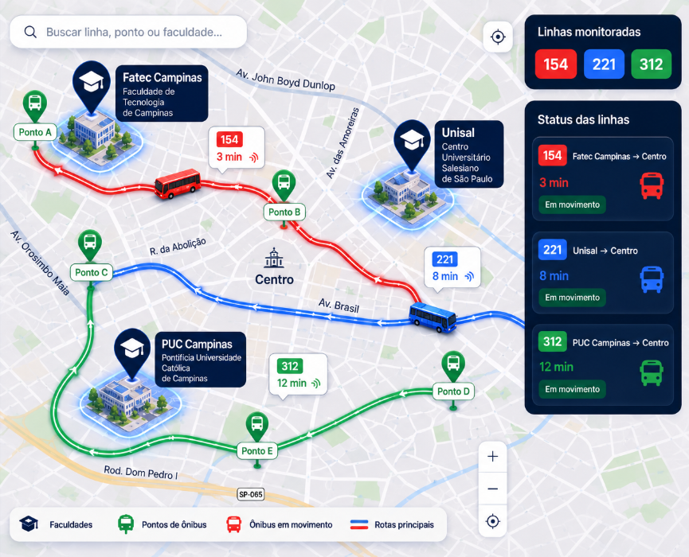

Acompanhe rotas, horários e lotação em tempo real para planejar sua viagem com mais segurança.

Universidade Central
Próxima chegada: 5 min
Terminal Norte
Próxima chegada: 12 min
Campus Sul
Próxima chegada: 8 min
Saiba exatamente onde o ônibus está.
Planeje sua saída com mais precisão.
Receba notificações sobre atrasos e mudanças.